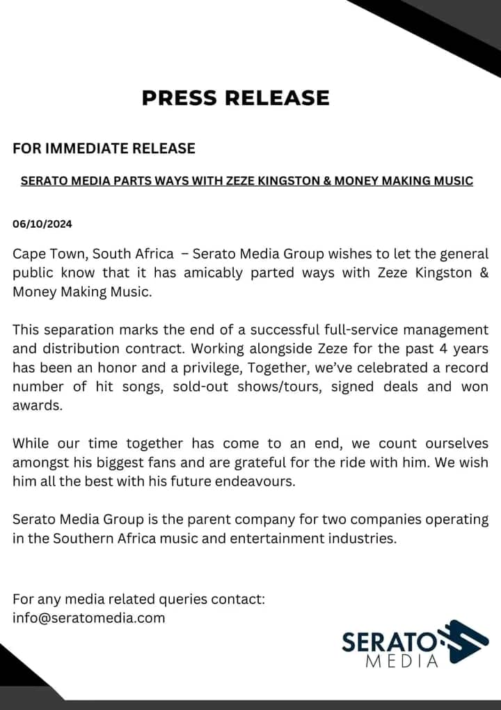

Zeze Parts Ways with Serato Media After 4 Years
New Chapter: Zeze's Money Making Music label takes over management.
New Chapter: Zeze's Money Making Music label takes over management.
'Liti' by TRITAH LIONESS is an electrifying fusion of rhythms and melodies, showcasing her signature style and energetic vibes. The track is a powerful display of her musical prowess, blending captivating beats with her dynamic vocal performance to create a hit that resonates with fans of urban and Afro-beat music alike.
Shano Index unleashes the sizzling visuals for 'NTIKA', his latest dancehall anthem featuring Bee Jay and Ace Jizzy. Directed by the talented Lang K (The Magic Guy), the energetic video brings the infectious dancehall beats to life with vibrant performances, stunning visuals, and a captivating narrative. This video will keep you moving and showcases Shano Index's undeniable talent and presence in the urban music scene.
Join us for an electrifying night with South African Amapiano star, Leemckrazy, live at Moneymen Club, Blantyre on 16th November.
Experience non-stop dancing, energetic performances & Amapiano beats.
Lineup: Leemckrazy + more artists TBA.
Get ready to groove!